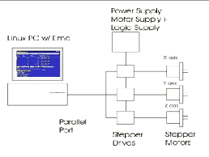
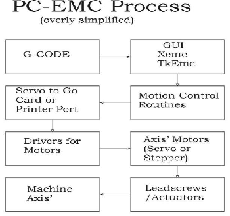
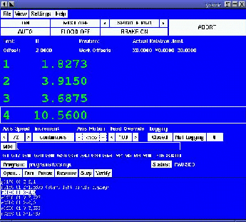

An often asked question is, "So what is the EMC anyway?" Here is part of the official NIST definition: "The Enhanced Machine Controller (EMC) program is a NIST effort to develop and validate a specification for interfaces to open architecture controllers."In simpler terms, EMC is a free and open source CNC controller program. The EMC can control machine tools, robots, or other automated devices. It can control servo motors, stepper motors, relays,and other devices related to machine tools.
|
To the right is a simple block diagram showing what
a typical 3-axis EMC system might look like. This diagram shows a
stepper motor system. The PC, running Linux as it's OS, is actually
controlling the stepper motor drives by sending signals through the
printer port. These signals (pulses) make the stepper drives move
the stepper motors. The EMC can also run servo motors via servo interface
cards or by using an extended parallel port to connect with external
control boards. [intro/images/whatstep.gif]
|
|

|
|

|
G-code is sent to the interpreter which sends blocks of canonical commands to the task and motion planning programs.
|
The GUI for EMC comes in many variations, text based,
X Windows, Tcl/Tk, Java, etc... The user interface
for EMC can easily be customized by users. [intro/images/whaty4.gif]
|
|

|